Lyric Video Studio · a web app for the phone
Hold the line.
Press when the line starts. Let go when it ends.
I write songs, and I wanted videos of them that are easy to pass around, with the words as the picture. Lyric Video Studio turns a song and its lyrics into a vertical lyric video in five steps: Song, Lyrics, Sync, Style, Save.
Simulation · no sound
Tap Start Sync. Then hold the button while each gray block passes the marker. (The blocks stand in for the singing.)
The problem
111 lines is 222 moments to mark.
A lyric video is the words of a song on screen. Each line arrives when it is sung and leaves when it ends, so each line needs two times: in and out.
“Keep it to Myself though” has 111 lines. I wanted to mark all of them on my phone, and a timeline with two handles for every line does not fit under a thumb.
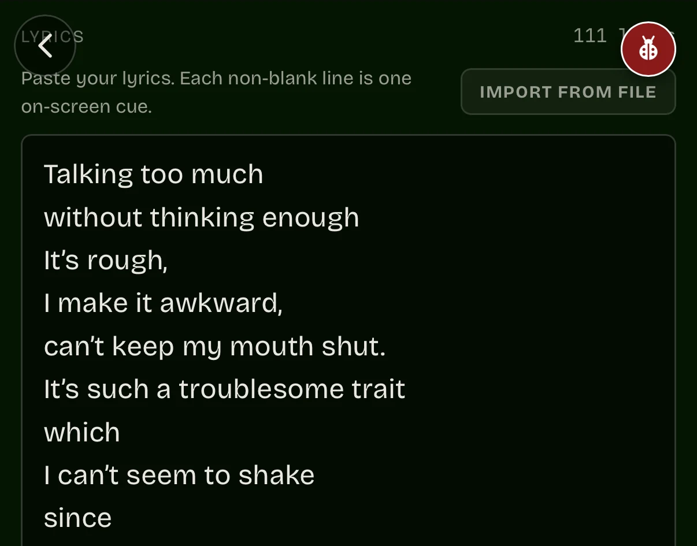
The idea
Don’t edit the timing. Play it.
The song plays. When a line starts, press. When it ends, let go. One thumb on one button gives both times, and the line is on screen for as long as your thumb is down.
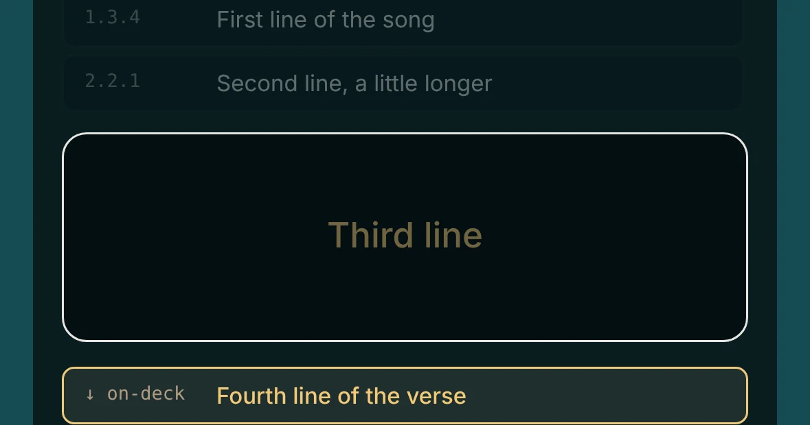
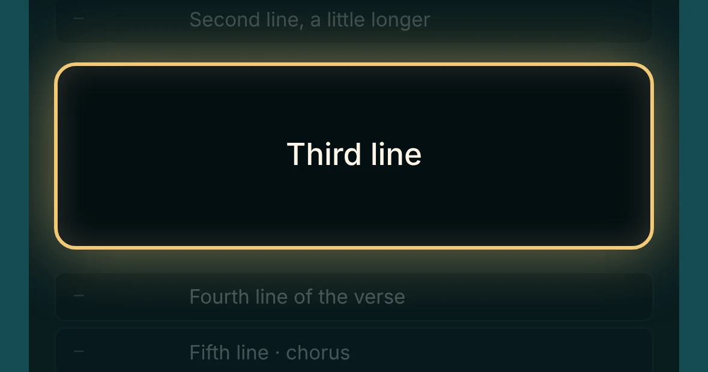
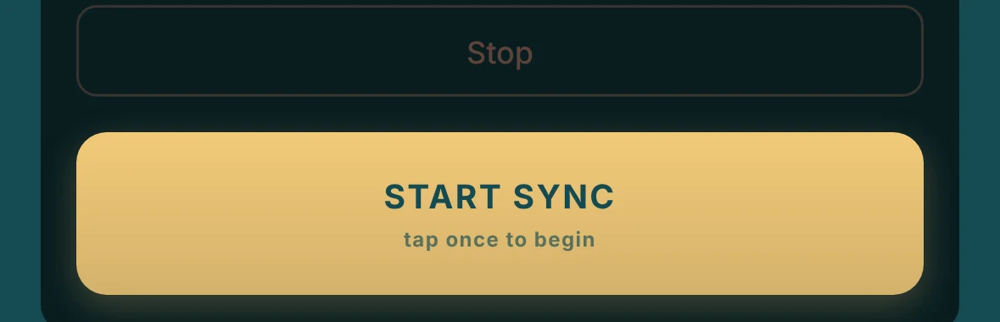
Tap once and the song plays.
The button is the largest thing on the screen, and it sits under the thumb.
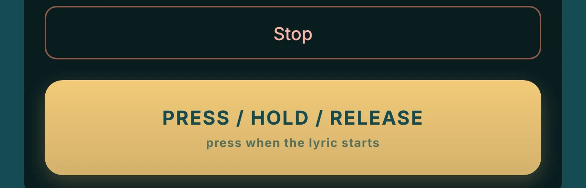
Press to start the line.
The button’s own words are the instructions. Nothing is typed, dragged or nudged.
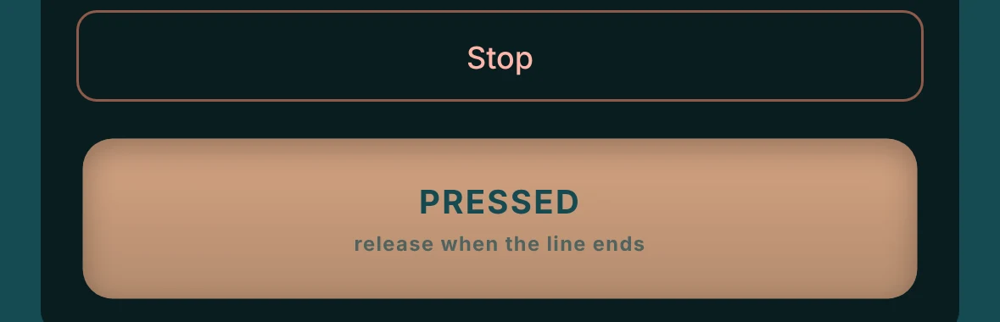
Let go to end it.
The gap before the next press is a blank screen in the video.
It counts the way a musician counts.
Each timed line shows where it starts in bars, beats and sixteenths, worked out from the song’s tempo and time signature. It is a readout. Nothing moves your press onto a beat.
A whole song has been timed in it.
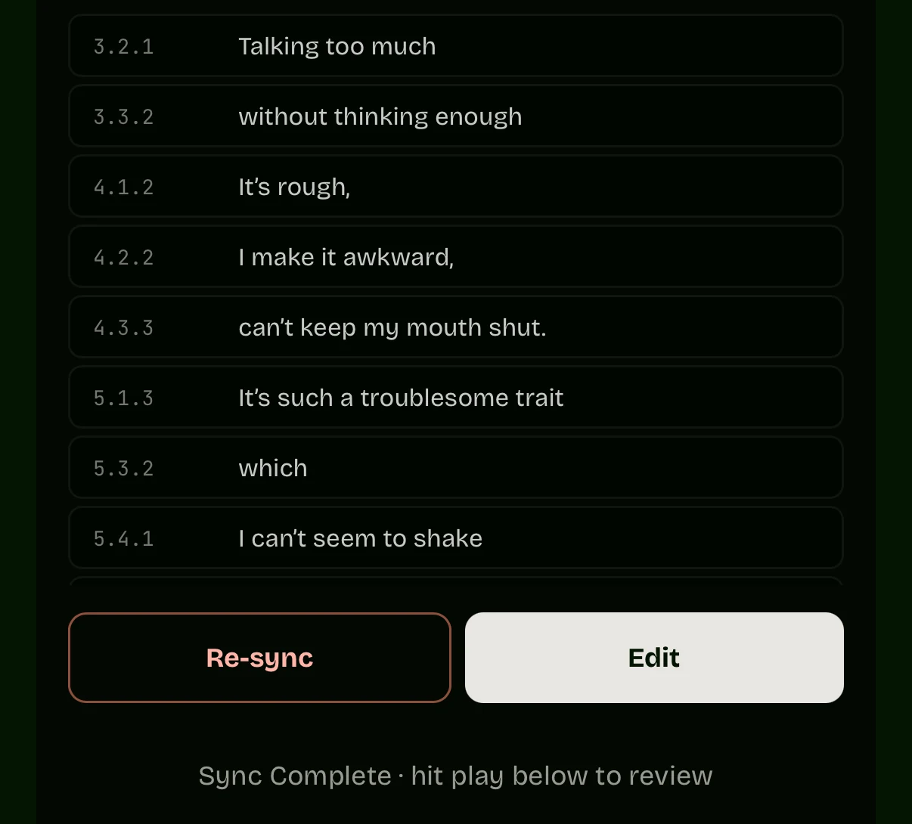
One screen
Time, fix and review on one screen.
The earlier design spread timing across four modes on several screens. One screen now covers the first pass, recovery, editing and review.
Most of my decisions on this app were about what to leave off the screen.
Fix a line with the same gesture.
There is no second editing mode. Pick the line and press it again. When you resume, the song starts one line early so you hear the run-up, and that earlier line keeps its timing.
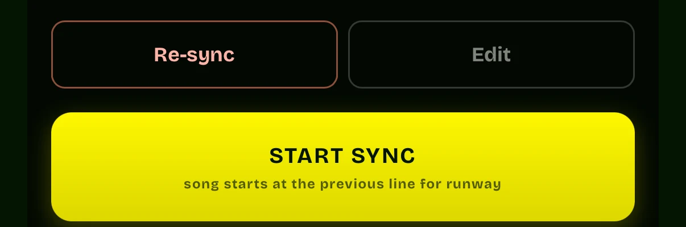
What it does without
The quality menuRemovedOne use needs one setting: 540 by 960, 30 frames a second, MP4.The QR ending cardBuilt, then removedThe link behind it was unreliable, and the streaming info can go in the post.Silence before the songRemovedSound and picture start together.Snap to beatNot on the new screenThe earlier Sync screen had the switch. The press is the timing.Nudge buttonsNoneTo fix a line, press it again.A results pageNoneThe review plays on the same screen.Fades on the wordsNoneA line changes at once, and so does a strobe.
The same idea, twice
Pick the colors from the cover.
The timing is already in the song, so play it. The colors are already in the cover art, so point at them.
Add a cover, and the app takes two colors from it and wears them on every screen. With my cover those two are a yellow and a near-black, and the app keeps the pair at a contrast of 4.5 to 1 or better.
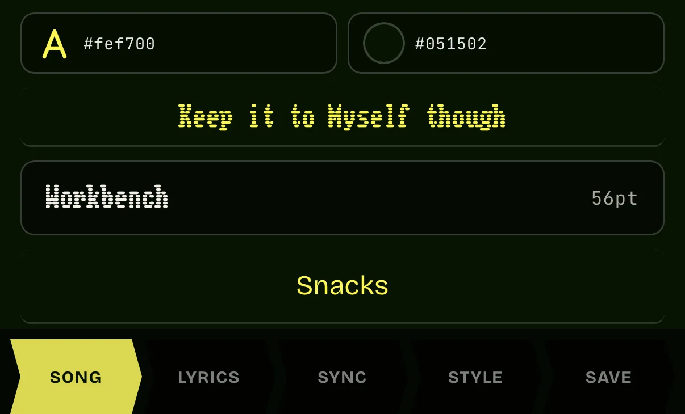
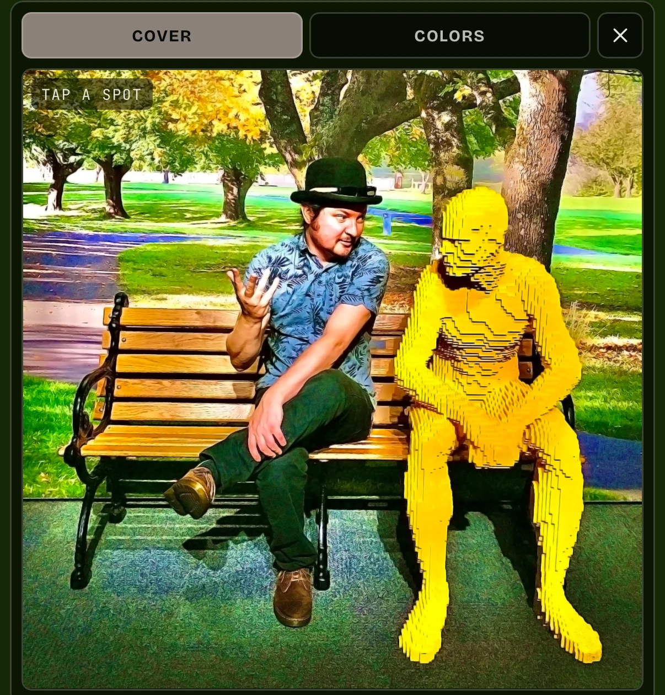
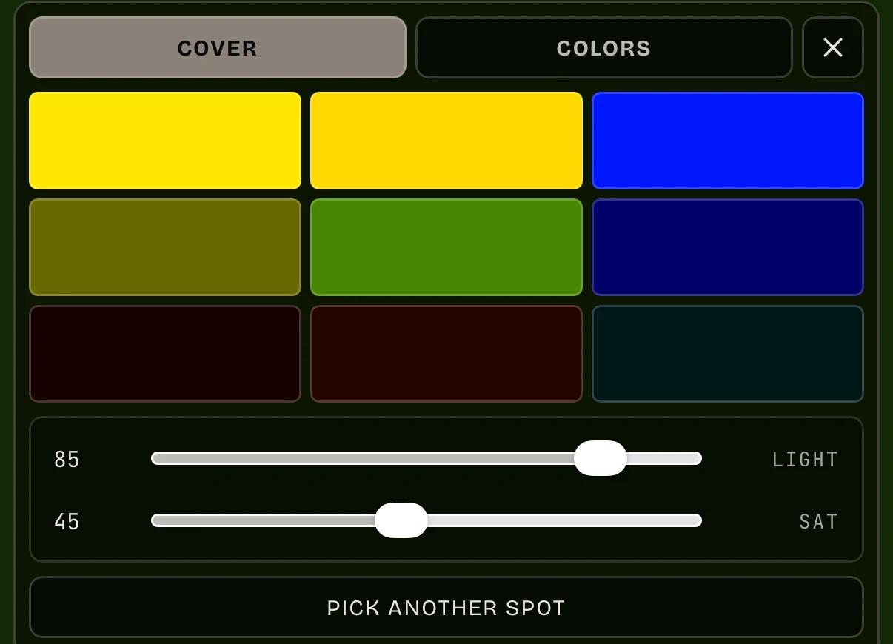
On every screen
Hold the ladybug. It already knows what you did.
A red ladybug sits at the top right of every screen. Hold it to open a bug report. It opens on a hold and ignores a tap because the Sync button is a hold, and a button that opened on a tap would fire in the middle of a line.
The app keeps a list of your last actions. When the form opens, the screen you were on and the steps to repeat are already filled in. Type one line and one paragraph.
The reporter was my idea. It is part of the live app, so you can file a bug from the site itself.
Hold the ladybug.Simulation. Nothing is filed or sent.
A circle button with a 1px white stroke, a very dark red fill, and a white ladybug icon.
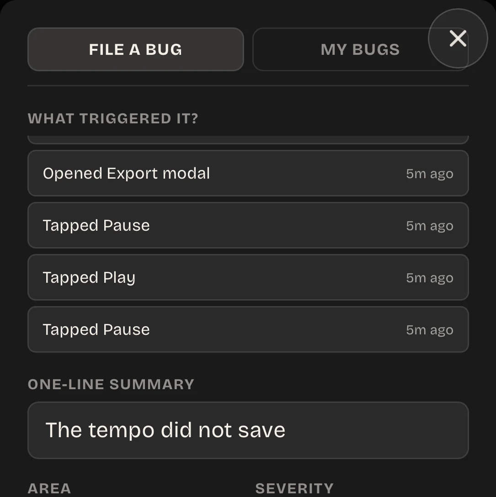